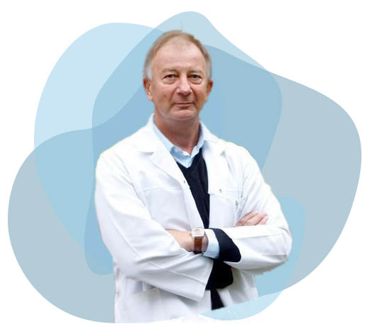

<section class="about-me">
    <div class="container">
      <h1>Apie mane</h1>
      <div class="about-me-wrapper">
        <div class="about-me-image">
          
        </div>
        <div class="about-me-text">
          <p>Кандидат наук – disertacijos darbas atliktas Maskvos tautų draugystės universitete.</p>
          <p>Dirbau Vilniaus Universiteto Medicinos fakulteto nervų ir psichinių ligų katedroje asistentu
            ir neakivaizdiniu aspirantu, įvairių Vilniaus ligoninių neurologijos skyriaus vedėju,
            Vilniaus medicinos mokyklos destytoju.</p>
          <p>Dirbu konsultuojančių neurologu Medicinos diagnostikos ir gydymo centre.</p>
          <p>Stažavausi JAV, Vokietijoje, Ukrainoje, Izraelyje, Rusijoje. Skaičiau pranešimus ir
            dalyvavau su stendiniais pranešimais įvairiose pasaulio ir Lietuvos moksliniuose renginiuose.</p>
          <p>Esu 80 mokslinių straipsnių bei didelio kiekio populiarių straipsnių, intervių, komentarų autorius.</p>
          <p>Daugelio įvairių televizijos stočių medicinos ir visuomeninių laidų dalyvis. Lietuvos ir pasaulines
            neurologų asociacijos narys, insulto asociacijos narys.</p>
          <p>Vilniaus Rotary klubo narys</p>
        </div>
      </div>
      <div class="certifications-wrapper">
        <div class="certificate-image1">
          
        </div>
        <div class="certificate-image2">
          
        </div>
      </div>
    </div>
  </section>